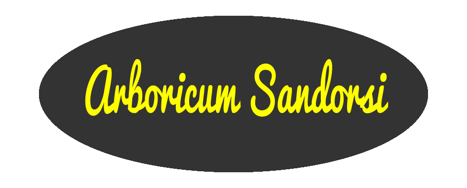
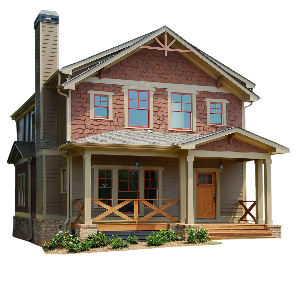
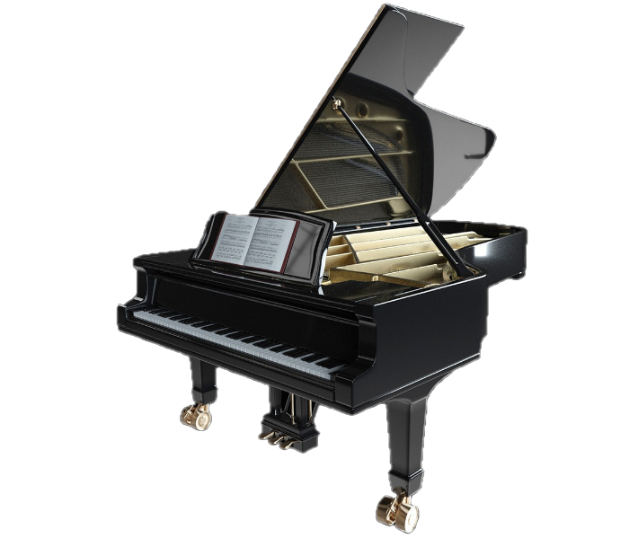
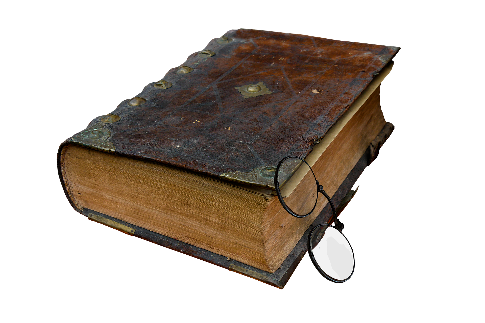
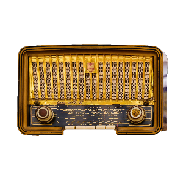
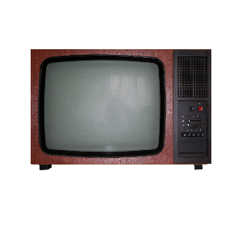
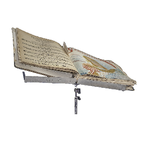

Un libro con una trama esilissima e difficile da comprendere, quattro storie principali che si richiamano vagamente una con l'altra immerse in un mondo apparentemente privo di qualunque senso. Emergono infinite domande alle quali non viene data alcuna risposta. Ottanta splendide immagini di Piero Brunetto Passacantando completano un universo privo di riferimenti e di orizzonti.







Musica su SoundCloud
Tutti la mia musica in formato audio
Siediti, rilassati e... buon ascolto!
Relaxing music for stress relief Vol.3
Relaxing music for stress relief Vol.2
Relaxing music for stress relief Vol.1
Invenzioni a 3 voci di J.S.Bach trascritte per synth1
Electronic tangos
Mornful time
Meditation music
Dancing with my soul
Parallel universes
Music fragments from parallel worlds
Singles
Musica su YouTube
Elenco delle playlist su You Tube con tutta la mia musica
Dancing with my soul
14 tracce di musica dance secondo i criteri del tutto personali del Sandorsi, fra cui diversi brani in ritmi composti e talvolta bizzarri (tipo il 5/4 o l'alternanza tra questo, il 7/4, il 4/4 e il 3/4)
Music fragments from parallel worlds
raccolta di brani di musica futuristica più che contemporanea: numerosi strumenti insoliti, le infinite possibilità del computer e un approccio creativo alla ricerca di nuovi orizzonti sonori
Meditation music
musica composta per sintetizzatore dalle sonorità meditative e fantasiose e bizzarre armonie di contorno
Meditation music 2 - Big Bang's sounds of other universes
partendo dal ricostruito suono del Big Bang del nostro universo, ho immaginato come avrebbe potuto suonare il Big Bang di alcuni universi paralleli
Meditazioni musicali - Improvvisazioni polistrumentali
improvvisazioni polistrumentali eseguite con i vari e spesso bizzarri strumenti della mia numerosa collezione
Ninna nanne per carillon
piccole ninna nanne per carillon dedicate ai miei adorati figli, Leonardo e Sebastiano
J.S.Bach - Invenzioni a 3 voci BWV 787-801 trascritte per Synth
le Invenzioni a 3 voci, o Sinfonie, di J.S.Bach trascritte e arrangiate per synth, tramite l'uso di Sibelius prima e Fruity Loops poi, dall'Arboricum Sandorsi, ovvero il buon Yari Piras
Messa per coro a 4 voci a cappella (SATB) "per Emma"
scritta in occasione del matrimonio della cugina Emma, la Messa ha l'ambizione di fondere il modo di scrivere la liturgia cantata tra '500 e '600 con armonie e tecniche contrappuntistiche di stampo Bachiano e con il testo in italiano, che penso essere cosa piuttosto rara nella messa in musica di un'intera messa. Strutturata secondo lo schema canonico Kyrie-Gloria-Credo-Sanctus-Agnus Dei-Missa Est, include una fuga per Gloria e Credo e un vero e proprio corale per il Missa Est con accompagnamento di organo, con testo nella versione solo spartito.
Spartiti musicali dell'Arboricum
spartiti tradotti in video e audio, alcuni presenti su scoreexchange altri no, per i più svariati complessi strumentali
Arboricum Sandorsi's Tangos
5 tanghi elettronici
Ifigonia in Culide - Opera lirica - Spartito
Lo spartito integrale qui: http://www.scoreexchange.com/scores/190115.html
Ifigonia in Culide (o Apogeo del Bunga-bunga) - Opera lirica in un atto posta in musica dall'Arboricum Sandorsi nel 2016
I. Ouverture 00:00
II. Aria del Gran Cerimoniere, coro del popolo 04:37
III. Recitativo (arioso) del Re 08:18
IV. Recitativo del Gran Cerimoniere 11:28
V. Coro delle Vergini ed Ifigonia 12:41
VI. Recitativo ed aria di Ifigonia 14:27
VII. Recitativo e aria di Ifigonia, coro delle Vergini e del Popolo 17:18
VIII. Recitativo (arioso) del Re e della Regina, coro del Popolo 19:29
IX. Aria di Ifigonia, coro delle Vergini e del Popolo 23:51
X. Recitativo del Re e del Gran Cerimoniere 26:14
XI. Entrata del Gran Sacerdote. Recitativo del Gran Sacerdote e (arioso) del Re. Raccoglimento del Gran Sacerdote prima della sua litania (aria) 27:06
XII. Aria del Gran Sacerdote 31:10
XIII. Recitativo-terzetto (arioso) di Re, Regina, Ifigonia 34:48
XIV. Recitativo di Ifigonia e del Re. Coro del Popolo 36:41
XV. Recitativo del Re e del Gran Sacerdote 38:19
XVI. Cabaletta di Ifigonia 40:55
XVII. Coro finale e chiusura del Gran Sacerdote 42:49
Ifigonia in Culide (o Apogeo del Bunga-bunga) - Opera lirica in un atto posta in musica dall'Arboricum Sandorsi nel 2016
Libretto di Yari Piras tratto dalla tragedia in 3 atti omonima ed anonima ma da molti attribuita a Gabriele D'Annunzio ma più probabilmente di Lorenzo Stecchetti, comunque un vero e proprio classico della tradizione goliardica italiana
Musica su ScoreExchange
Poesie Brutte perché estreme, spesso scarne e disadorne ed altre volte piene e pompose, si autopongono ai margini del mondo e lo guardano con animo distaccato, critico, sarcastico e in parte altero. Poesie Brutte perché non interessa tanto la bellezza quanto piuttosto la parola, il messaggio, un messaggio non sempre tarato per i soli cinque sensi. Poesie Brutte nonostante le innumerevoli cure, di forma e sostanza, ed anzi forse proprio a causa di esse. Trattasi di raccolta all'antica: 135 componimenti tra forme libere e liberissime ma anche sonetti e sestine liriche alla ricerca di una nuova comunicazione poetica con un'occhio di riguardo per l'esperienza del passato. Con molta autoironia, un po' di sana tecnica buttata come olio in un ingranaggio ormai troppo arrugginito per non stridere comunque e anche, già che ci si era, un filo di impegno civile come uovo di Colombo; insomma, una bella maionesata di roba. La seconda edizione rispetto alla prima ha una lirica in più (Un parchetto), un ordine diverso, ed è arricchita da 19 splendide illustrazioni del carissimo amico Piero Brunetto Passacantando che riflettono in maniera mirabile lo spirito del libro.
Interattivo!
Trova il tuo sonetto preferito, scegliendo fra le 14 possibilità per ogni strofa.
Clicca QUI
Se proprio non si sa dove sostare
si prega di non prendersela a male
ché basta avere un po’ di zucca in sale
per smettere l’invano ricercare.
Con questo movimento circolare
discende tutto ciò che a un tempo sale
perché per lucidare ancor l’opale
bisogna assai con lena lavorare.
Or che la storia ci naviga intorno
ed or che non ci punge la zanzara
si metteranno le patate in forno.
Adesso che la vita costa cara,
che l’uomo serve solo da contorno,
non trovo la sorpresa tanto amara.
Arboricum Sandorsi
Ho studiato composizione sperimentale presso il conservatorio di Novara prima e quello di Milano poi; mi sono laureato in Lettere moderne, indirizzo Storia della musica con una tesi dal titolo "Storia degli strumenti musicali elettronici nella musica colta occidentale dal 1876 agli anni '80 del '900" presso l'Università Statale di Milano... In questi anni sono state eseguite numerose mie opere per i più svariati ensamble strumentali, alcune delle quali sono disponibili on-line nel sito scoreexchange (vd contatti) o su You Tube.. La composizione sperimentale studiata al conservatorio mi ha portato a sperimentare varie forme compositive e a scoprire il mondo dell'elettronica, quindi all'uso di software quali Cubase, Samplitude, Fruity Loop (e molti altri). Sempre per esigenze compositive, ho acquisito competenze professionali nell'uso del software di scrittura musicale Sibelius, con oltre 16 anni di esperienza alle spalle e l'uso di tutte le versioni dalla 3 in poi. Ho studiato violino, chitarra, pianoforte, flauto dolce, fisarmonica e da lì il salto al polistrumentismo è stato breve.
Email: sandorsi@arboricum.it
Email: arboricum@yaripiras.it
Profilo su Facebook
Score Exchange (spartiti di Y.Piras)
Profilo su SafeCreative
Profilo su SoundCloud
Profilo su YouTube
Il mio primo sito